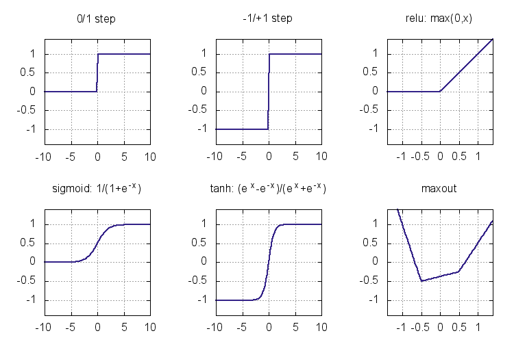
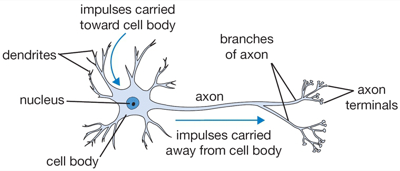
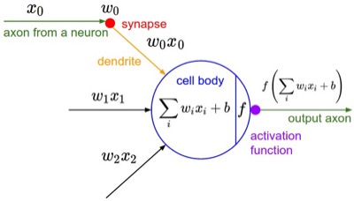
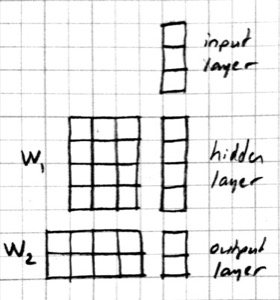

Multilayer Perceptrons
In this section we create multilayer perceptrons by stacking multiple linear layers with non-linear activation functions in between.
Stacking linear classifiers is useless
We could try stacking multiple linear classifiers together. Here is a two layer model:
function multilinear(w, x, ygold)
y1 = w[1] * x .+ w[2]
y2 = w[3] * y1 .+ w[4]
return softloss(ygold, y2)
endNote that instead of using y1 as our prediction, we used it as input to another linear classifier. Intermediate arrays like y1 are known as hidden layers because their contents are not directly visible outside the model.
If you experiment with this model (I suggest using a smaller learning rate, e.g. 0.01), you will see that it performs similarly to the original softmax model. The reason is simple to see if we write the function computed in mathematical notation and do some algebra:
where $W=W_2 W_1$ and $b=W_2 b_1 + b_2$. In other words, we still have a linear classifier! No matter how many linear functions you put on top of each other, what you get at the end is still a linear function. So this model has exactly the same representation power as the softmax model. Unless, we add a simple instruction...
Introducing nonlinearities
Here is a slightly modified version of the two layer model:
function mlp(w, x, ygold)
y1 = relu(w[1] * x .+ w[2])
y2 = w[3] * y1 .+ w[4]
return softloss(ygold, y2)
endMLP in mlp stands for multilayer perceptron which is one name for this type of model. The only difference with the previous example is the relu() function we introduced in the first line. This is known as the rectified linear unit (or rectifier), and is a simple function defined by relu(x)=max(x,0) applied elementwise to the input array. So mathematically what we are computing is:
This cannot be reduced to a linear function, which may not seem like a big difference but what a difference it makes to the model! Here are the learning curves for mlp using a hidden layer of size 64:

Here are the learning curves for the linear model softmax plotted at the same scale for comparison:

We can observe a few things: using MLP instead of a linear model brings the training error from 6.7% to 0 and the test error from 7.5% to 2.0%. There is still overfitting: the test error is not as good as the training error, but the model has no problem classifying the training data (all 60,000 examples) perfectly!
Types of nonlinearities (activation functions)
The functions we throw between linear layers to break the linearity are called nonlinearities or activation functions. Here are some activation functions that have been used as nonlinearities:

The step functions were the earliest activation functions used in the perceptrons of 1950s. Unfortunately they do not give a useful derivative that can be used for training a multilayer model. Sigmoid and tanh (sigm and tanh in Knet) became popular in 1980s as smooth approximations to the step functions and allowed the application of the backpropagation algorithm. Modern activation functions like relu and maxout are piecewise linear. They are computationally inexpensive (no exponentials), and perform well in practice. We are going to use relu in most of our models. Here is the backward passes for sigmoid, tanh, and relu:
| function | forward | backward |
|---|---|---|
| sigmoid | $y = \frac{1}{1+e^{-x}}$ | $\nabla_x J = y\,(1-y) \nabla_y J$ |
| tanh | $y = \frac{e^x-e^{-x}}{e^x+e^{-x}}$ | $\nabla_x J = (1+y)(1-y) \nabla_y J$ |
| relu | $y = \max(0,x)$ | $\nabla_x J = [ y \geq 0 ] \nabla_y J$ |
See (Karpathy, 2016, Ch 1) for more on activation functions and MLP architecture.
Representational power
You might be wondering whether relu had any special properties or would any of the other nonlinearities be sufficient. Another question is whether there are functions multilayer perceptrons cannot represent and if so whether adding more layers or different types of functions would increase their representational power. The short answer is that a two layer model can approximate any function if the hidden layer is large enough, and can do so with any of the nonlinearities introduced in the last section. Multilayer perceptrons are universal function approximators!
We said that a two-layer MLP is a universal function approximator given enough hidden units. This brings up the questions of efficiency: how many hidden units / parameters does one need to approximate a given function and whether the number of units depends on the number of hidden layers. The efficiency is important both computationally and statistically: models with fewer parameters can be evaluated faster, and can learn from fewer examples (ref?). It turns out there are functions whose representations are exponentially more expensive in a shallow network compared to a deeper network (see (Nielsen, 2016, Ch 5) for a discussion). Recent winners of image recognition contests use networks with dozens of convolutional layers. The advantage of deeper MLPs is empirically less clear, but you should experiment with the number of units and layers using a development set when starting a new problem.
Please see (Nielsen, 2016, Ch 4) for an intuitive explanation of the universality result and (Bengio et al. 2016, Ch 6.4) for a more in depth discussion and references.
Matrix vs Neuron Pictures
So far we have introduced multilayer perceptrons (aka artificial neural networks) using matrix operations. You may be wondering why people call them neural networks and be confused by terms like layers and units. In this section we will give the correspondence between the matrix view and the neuron view. Here is a schematic of a biological neuron (figures from (Karpathy, 2016, Ch 1)):

A biological neuron is a complex organism supporting thousands of chemical reactions simultaneously under the regulation of thousands of genes, communicating with other neurons through electrical and chemical pathways involving dozens of different types of neurotransmitter molecules. We assume (do not know for sure) that the main mechanism of communication between neurons is electrical spike trains that travel from the axon of the source neuron, through connections called synapses, into dendrites of target neurons. We simplify this picture further representing the strength of the spikes and the connections with simple numbers to arrive at this cartoon model:

This model is called an artificial neuron, a perceptron, or simply a unit in neural network literature. We know it as the softmax classifier.
When a number of these units are connected in layers, we get a multilayer perceptron. When counting layers, we ignore the input layer. So the softmax classifier can be considered a one layer neural network. Here is a neural network picture and the corresponding matrix picture for a two layer model:


Here is a neural network picture and the corresponding matrix picture for a three layer model:


We can use the following elementwise notation for the neural network picture (e.g. similar to the one used in UFLDL):
Here $x_i^{(l)}$ refers to the activation of the $i$ th unit in $l$ th layer. We are counting the input as the 0'th layer. $f$ is the activation function, $b_i^{(l)}$ is the bias term. $w_{ij}^{(l)}$ is the weight connecting unit $j$ from layer $l-1$ to unit $i$ from layer $l$. The corresponding matrix notation is:
Programming Example
In this section we introduce several Knet features that make it easier to define complex models. As our working example, we will go through several attempts to define a 3-layer MLP. Here is our first attempt:
function mlp3a(w, x0)
x1 = relu(w[1] * x0 .+ w[2])
x2 = relu(w[3] * x1 .+ w[4])
return w[5] * x2 .+ w[6]
endWe can identify bad software engineering practices in this definition in that it contains a lot of repetition.
The key to controlling complexity in computer languages is abstraction. Abstraction is the ability to name compound structures built from primitive parts, so they too can be used as primitives.
Defining new operators
We could make the definition of mlp3 more compact by defining separate functions for its layers:
function mlp3b(w, x0)
x1 = relu_layer1(w, x0)
x2 = relu_layer2(w, x1)
return pred_layer3(w, x2)
end
function relu_layer1(w, x)
return relu(w[1] * x .+ w[2])
end
function relu_layer2(w, x)
return relu(w[3] * x .+ w[4])
end
function pred_layer3(x)
return w[5] * x .+ w[6]
endThis may make the definition of mlp3b a bit more readable. But it does not reduce the overall length of the program. The helper functions like relu_layer1 and relu_layer2 are too similar except for the weights they use and can be reduced to a single function.
Increasing the number of layers
We can define a more general mlp model of arbitrary length. With weights of length 2n, the following model will have n layers, n-1 layers having the relu non-linearity:
function mlp_nlayer(w,x)
for i=1:2:length(w)-2
x = relu(w[i] * x .+ w[i+1]))
end
return w[end-1] * x .+ w[end]
endIn this example stacking the layers in a loop saved us only two lines, but the difference can be more significant in deeper models.
References
- http://neuralnetworksanddeeplearning.com/chap4.html
- http://www.deeplearningbook.org/contents/mlp.html
- http://cs231n.github.io/neural-networks-1
- http://ufldl.stanford.edu/tutorial/supervised/MultiLayerNeuralNetwork
- http://www.wildml.com/2015/09/implementing-a-neural-network-from-scratch